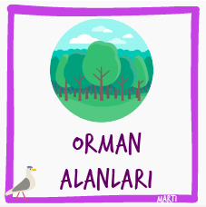
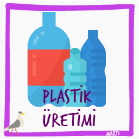

FIFA 18 Futbolcuları
Bu veri setinde, FIFA ilk 100'deki oyuncuların isim, yaş, ülke, skor gibi bilgilerini bulabilirsin.
İndir

Erken Gölü Fitoplanktonları
İsveç'teki Erken Gölünün fitoplankton biyokütlesi değerleri.
Katman Verisini İndir Düzenli Ölçüm İndir

Maine Yaban Mersini Üretimi
Maine'in temel geçim kaynaklarından biri olan yaban mersini üretiminin yıllık üretim değerleri.
İndir

Şehir Bisikletleri
Bu veri setinde, dört durak arasındaki bisiklet kullanımının süre verisi bulunmaktadır.
İndir

İndir
Ormanlık Alanlar
Bu veri setinde, 1990-2018 yılları arasında ülkelerin ormanlık alanlarının yüzölçümlerine oranı verilmiştir.
İndir

Araştırma Bütçeleri
Bu veri setinde, ülkelerin araştırmaya harcadıkları veriler bulunmaktadır.
İndir

İndir
Plastik Üretimi
Bu veri setinde, yıllara göre dünya genelinde plastik üretim verilerini bulacaksın.
İndir